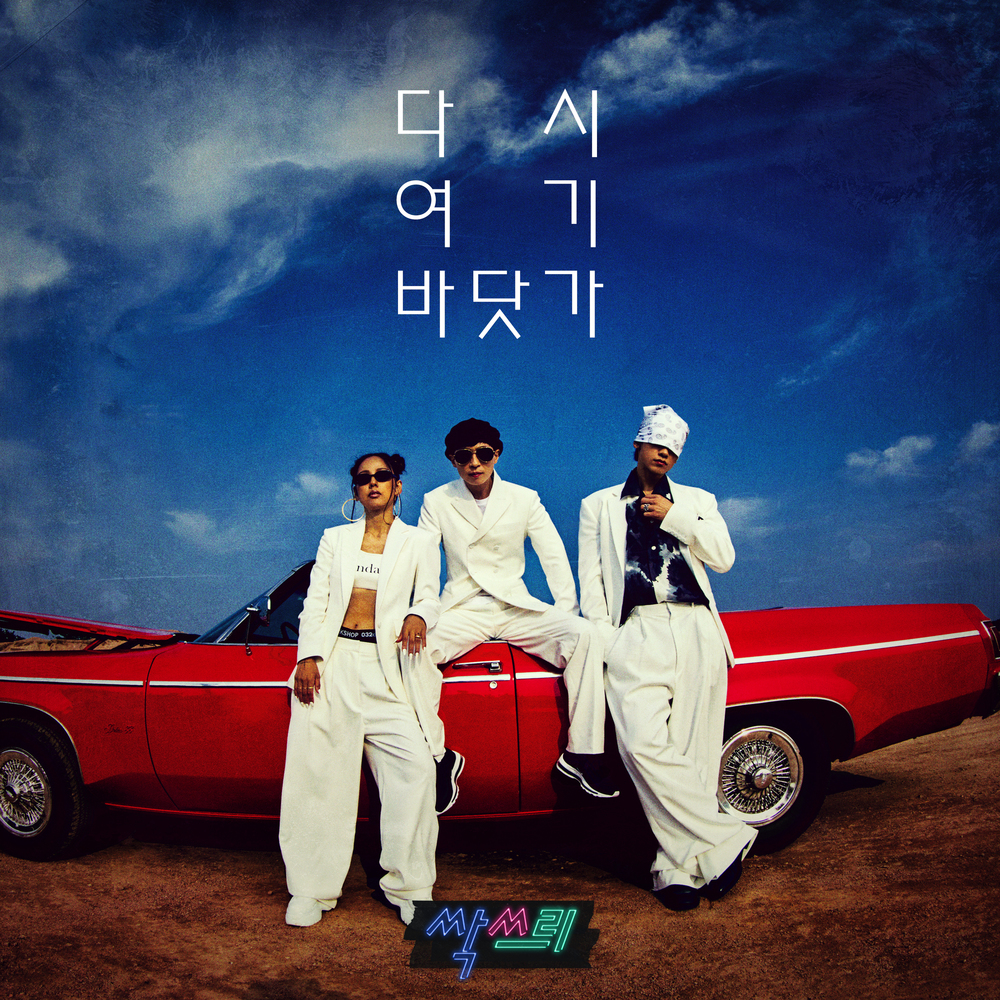
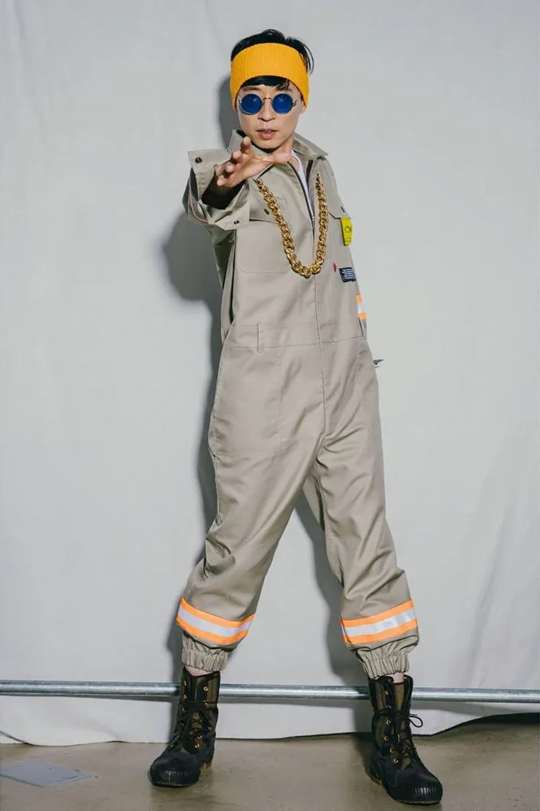
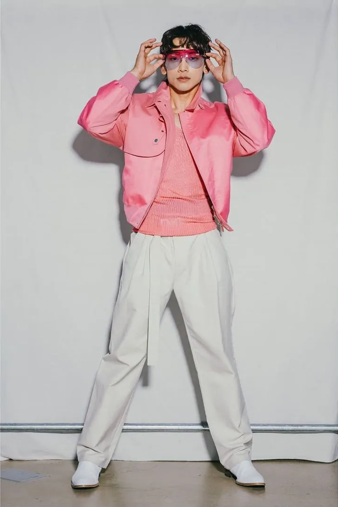

싹쓰리 ‘다시 여기 바닷가’ – 추억과 설렘이 교차하는 여름의 명곡
안녕하세요, 라보엠입니다.
오늘은 2020년 여름을 뜨겁게 달군 혼성 그룹 싹쓰리(SSAK3)의 데뷔곡이자 휴가지로 떠나며 듣기 좋은 썸머송 ‘다시 여기 바닷가’를 소개해드리겠습니다. 싹스리 유재석(유두래곤), 이효리(린다G), 비(비룡)라는 어디서도 볼 수 없는 조합이 만들어낸 이 프로젝트는, MBC 예능 ‘놀면 뭐하니?’를 통해 탄생하며 세대를 아우르는 화제와 함께 감동을 동시에 선사했습니다. 이 곡이 가진 매력과 의미, 그리고 그 시절의 감성을 오늘 다시 한 번 되짚어보겠습니다.

싹쓰리와 ‘다시 여기 바닷가’의 탄생
‘다시 여기 바닷가’는 싹쓰리의 데뷔 무대와 함께 더욱 큰 화제를 모았습니다. 2020년 7월 25일 MBC ‘쇼! 음악중심’에서 첫 무대를 선보였고, 같은 날 ‘놀면 뭐하니?’에서는 뮤직비디오가 공개되었습니다. 세 멤버의 완벽한 호흡과 유쾌한 퍼포먼스, 그리고 팬들과의 소통이 어우러지며, 단숨에 대중의 사랑을 받았습니다.
특히 이 곡은 발매 직후 각종 음원차트 1위를 석권했고, 뮤직비디오와 방송 클립은 수백만 뷰를 기록하며 ‘싹쓰리 신드롬’을 일으켰습니다. 데뷔 3일 만에 관련 영상 누적 조회수 500만 회를 돌파하는 등, 그 인기를 실감할 수 있었습니다.
‘다시 여기 바닷가’는 우리 모두의 마음속에 남아 있는 소중한 추억과 그리움을 다시 꺼내어 보여줍니다. 시간이 흘러도 변하지 않는 감정, 그리고 다시 만난 사람들과의 소중함을 노래하는 이 곡은, 듣는 이로 하여금 자신의 지난 여름을 떠올리게 하며, 앞으로의 여름에도 또 다른 추억을 쌓고 싶게 만듭니다. 이 곡을 듣고 있으면, 바닷가의 파도 소리와 함께 설렘과 아련함이 교차합니다. 그리고 그 시절, 함께였던 누군가를 떠올리며 미소 짓게 됩니다.
곡의 특징
‘다시 여기 바닷가’는 2020년 7월 18일 발매와 동시에 음원차트 정상을 휩쓸며, 코로나19로 지친 대중에게 잠시나마 시원한 바람과 추억을 선물했습니다. 이상순 작곡에 린다G(이효리)와 지코가 작사에 참여한 이 곡은 90년대 감수성을 현대적으로 재해석한 뉴트로 댄스팝입니다.
이 노래는 시원한 브라스와 그루비한 드럼, 세련된 신스 사운드가 어우러진 댄스팝 트랙으로 도입부부터 설렘을 자아내는 멜로디와, 각 멤버의 개성이 살아 있는 보컬이 곡 전체를 이끌어갑니다. 후렴구에서는 “지난여름 바닷가 너와 나 단둘이, 파도에 취해서 노래하며 같은 꿈을 꾸었지”라는 가사가 반복되며, 듣는 이로 하여금 지난 추억과 설렘을 떠올리게 만듭니다. 90년대의 감성을 현대적으로 풀어내, 그 시절을 경험한 이들에게는 향수를, 젊은 세대에게는 신선함을 동시에 선사했습니다. 브라스와 신스, 그리고 각 멤버의 시원한 목소리가 어우러져 여름 바다의 청량함을 그대로 담아냈습니다.
싹쓰리 멤버 소개
 
- 유두래곤(유재석): 특유의 친근함과 유쾌함으로 그룹의 중심을 잡아줍니다.
- 린다G(이효리): 세련된 음색과 카리스마로 곡의 감성적 깊이를 더합니다.
- 비룡(비): 파워풀한 퍼포먼스와 감미로운 보컬로 에너지를 불어넣습니다.
가사에 담긴 추억과 메시지
예아 호우 예예예
싹쓰리 인더 하우스
커커커커커몬 싹 쓰리 투 렛츠고
나 다시 또 설레어
이렇게 너를 만나서
함께 하고 있는 지금 이 공기가
다시는 널 볼 순 없을 거라고
추억일 뿐이라
서랍 속에 꼭 넣어뒀는데
흐르는 시간 속에서
너와 내 기억은
점점 희미해져만 가
끝난 줄 알았어
지난여름 바닷가
너와 나 단둘이
파도에 취해서 노래하며
같은 꿈을 꾸었지
다시 여기 바닷가
이제는 말하고 싶어
네가 있었기에 내가 더욱 빛나
별이 되었다고
다들 덥다고 막 짜증내
괜찮아 우리 둘은 따뜻해
내게 퐁당 빠져버린 널
이젠 구하러 가지 않을 거야
모래 위 펴펴펴편지를 써
밀물이 밀려와도 못 지워
추억이 될 뻔한 첫 느낌
너랑 다시 한번 받아 보고 싶어
흐르는 시간 속에서
너와 내 기억은
점점 희미해져만 가
끝난 줄 알았어
지난여름 바닷가
너와 나 단둘이
파도에 취해서 노래하며
같은 꿈을 꾸었지
다시 여기 바닷가
이제는 말하고 싶어
네가 있었기에 내가 더욱 빛나
별이 되었다고
시간의 강을 건너
또 맞닿은 너와 나
소중한 사랑을 영원히
간직해줘
지난여름 바닷가
너와 나 단둘이
파도에 취해서 노래하며
같은 꿈을 꾸었지
다시 여기 바닷가
이제는 말하고 싶어
네가 있었기에 내가 더욱 빛나
별이 되었다고
‘다시 여기 바닷가’의 가사는 지나간 여름, 그리고 그 시절의 소중한 사람과의 추억을 담담하게 그려냅니다. “흐르는 시간 속에서 너와 내 기억은 점점 희미해져만 가, 끝난 줄 알았어”라는 구절에는 시간이 흘러도 잊히지 않는 소중한 기억에 대한 그리움이 묻어납니다. 그리고 “네가 있었기에 내가 더욱 빛나, 별이 되었다고”라는 고백은, 사랑하는 이와 함께한 순간이 얼마나 특별했는지를 다시금 느끼게 합니다.
이 곡은 단순한 여름 노래에 그치지 않고, 누구나 마음속에 간직한 추억과 그리움을 소환합니다. 바닷가라는 공간은 누군가에겐 첫사랑의 기억, 누군가에겐 친구들과의 웃음소리, 또 누군가에겐 가족과의 소중한 한때를 떠올리게 합니다.
맺음말
싹쓰리의 ‘다시 여기 바닷가’는 세대를 초월해 모두가 공감할 수 있는 여름 노래입니다. 유쾌한 퍼포먼스와 세련된 음악, 그리고 진솔한 가사가 어우러져, 한여름의 추억을 다시금 선물해줍니다. 이 곡과 함께 지난 여름의 소중한 기억을 떠올려보는 건 어떨까요? 그리고 휴가지로 떠나며 새로운 추억을 만들어보는 것도 좋을 것 같습니다.